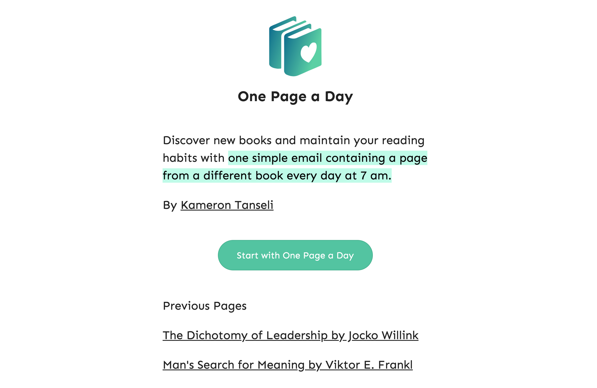
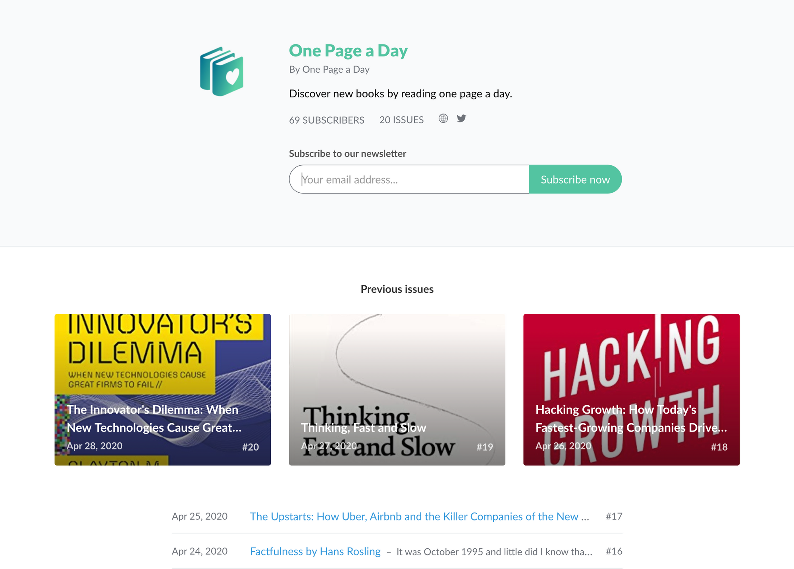
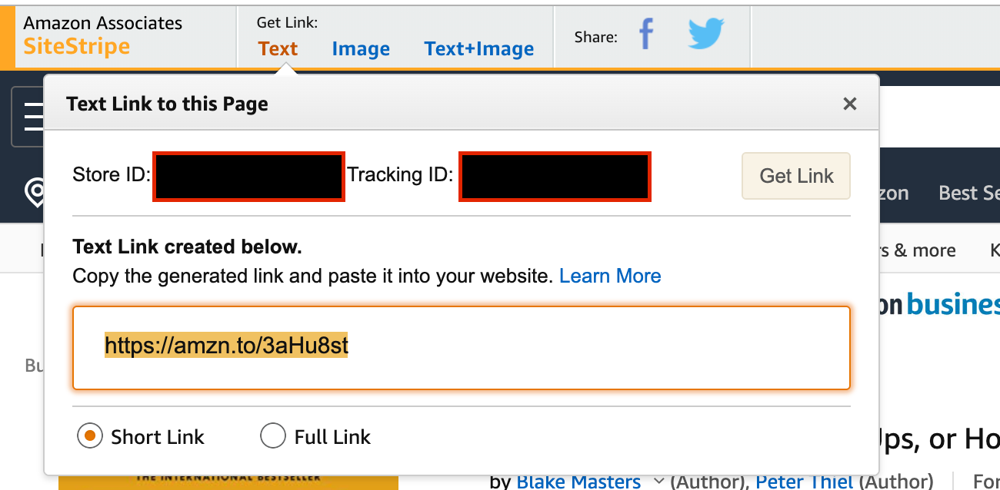

How I Built One Page a Day
If you've been following my activity on Twitter you would have seen my latest project, One Page a Day, an email service that sends you one page from a new book every morning at 7am.

One Page a Day Landing Page
In this article I'm going to go through how exactly the whole service works.
Landing Page (Free)
I quickly coded a simple landing page and deployed it for free using Netlify. The landing page links to the newsletter service.
Revue ($5 per month)
This whole service wouldn't be possible without Revue. Revue is an email newsletter service that allows you to build and send emails to a list of email subscribers.

One Page a Day's Revue Sign Up Page
Amazon Kindle Free Samples (Free)
In order to provide one page from a new book everyday. I use the "Send a free sample" option to get the first few pages a popular book:

The free sample contains all that I need to send a teaser of a book to my readers
Then if you open it on the Kindle app you can select and copy the text straight out of the sample:

Kindle's copy feature
Note: Amazon limits the amount of text you can copy to stop plagiarism from ebooks.
Then all I do is paste it into Revue and correctly format any issues with the text:

Copied Kindle Text into Revue
Amazon Affiliate Links
In order to break even with running costs I add affiliate links at the bottom of every book I send out:

Amazon Affiliate Links
You can add these to your Revue emails by inserting the affiliate link at the bottom of the email:

Amazon Affiliate Link Example

Adding a link has never been easier
Conclusion
Building an email newsletter startup has never been easier. I could have saved time by using a no-code website builder to make the landing page and outsourcing the book copy and pasting but all in all it takes me around 1 hour a week to run One Page a Day.